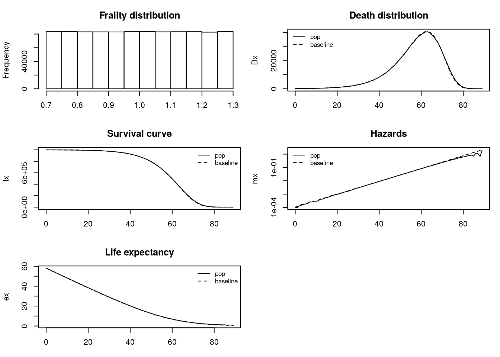
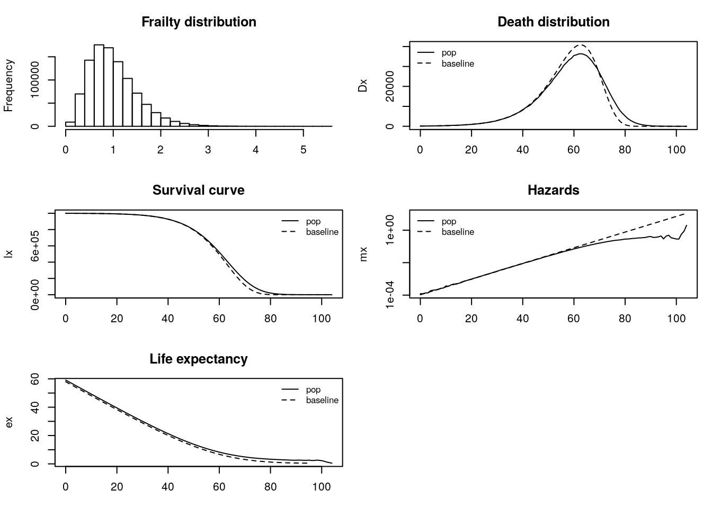
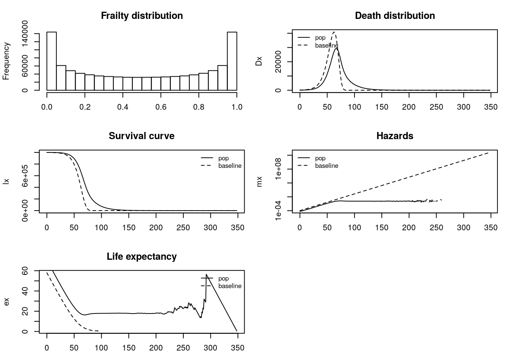

Chapter 3 Multiplicative Fixed Frailty
3.1 Outline
- Review of Mortality Mathematics
- Multiplicative-fixed-frailty and alternatives.
- Population Survival and Hazards under fixed frailty
- Gamma frailty
Additional resources
- Vaupel and Missov (2014):
- Rodriguez (2001): detailed hand-out for Princeton class. Many of the same results as Vaupel and Missov (2014), but with alternative derivations and notation. Also includes inversion formula and extensions beyond Gamma frailty such as “Inverse Gaussian Frailty”.
3.1.1 Review of mortality mathematics
\(\ell(x)\) or \(S(x)\) probability of survival to age \(x\)
\(\mu(x)\) or \(h(x)\) hazard rate at age \(x\) (“minus the exponential rate of change in survival”)
Let’s treat \(\mu\) as a definition. \[ \mu(x) \equiv -{d \over dx} \log \ell(x) \]
Can anti-differentiate (integrate) to solve for survival: \[ \ell(x) = s(x) = e^{-\int_0^x \mu(a)\, da} \]
3.1.2 Application: what is \(\ell'(x)\)?
- in words?
- taking derivative of \(\ell(x)\)
- interpretation
3.1.2.1 Two special cases
- Constant hazards \(\mu(x) = \mu\). What’s \(\ell(x)\)?
- Gompertz hazards \(\mu(x) = a e^{b x}\). What’s \(\ell(x)\)?
3.1.3 Extending Keyfitz to mortality
\[ {d \over dx} \bar{\mu}(x) = \mbox{average rate of change} - \sigma_\mu^2 \]
What is \(\bar{\mu}\)? It’s a weighted average: \[ \bar{\mu}(x) = {\int \mu(x | z) \ell(x | z) p(z) \, dz \over \int \ell(x | z) p(z) \, dz} \]
To derive Keyfitz extension, differentiate with respect to age \(x\). (See Vaupel and Missov (2014) (Eq. 13). A good exercise.
3.1.4 Multiplicative Fixed frailty
For individual \(i\), \[ \mu_i(x) = z_i \mu_0(x). \]
- \(z_i\) “frailty” of the \(i\)th individual. (Usually thought of as a random variable with mean \(1\).)
- \(\mu_0(x)\) “Baseline hazard” schedule. (Also, the schedule of a person with \(z = 1\)).
- Let’s think of at least three. (\(\beta\), \(i\), \(\Delta\))
Which look like multiplicative fixed frailty?

Figure 3.1: Multiplicative fixed frailty
3.2 Part I. Results from Fixed Frailty
3.2.1 A simulation
- Our questions
- How do we do a micro-simulation, with individuals?
- How does fixed frailty fit in?
- How do we compute pop survival, hazards, etc.
- How does life table of heterogeneous pop differ from baseline?
3.2.2 Let’s derive pop survival (Note: \(\bar{s} = \bar{\ell}\))
Pop survival will be a weighted average of group survival curves
\[ \bar{s}(x) = {p(z_1) s_1(x) + p(z_2) s_2(x) + \ldots \over p(z_1) + p(z_2) + \ldots} \] With continuous \(z\) (what are limits of integration?)
\[ \bar{s}(x) = \int s(x|z) p(z) \, dz \]
Under Multiplicative Fixed Frailty use \[ \mu(x|z) = z \mu_0(x) \]
to derive
\[\bar{s}(x) = \int s_0(x)^z p(z) \,dz.\]
3.2.3 Now population hazards (stepping stones)
Definition of hazards:
\[ \bar{\mu}(x) = - {d \over dx} \log \bar{s}(x) \]
\[ \bar{\mu}(x) = \mu_0(x) {\int z s_0(x)^z p(z) \, dz \over \int s_0(x)^z p(z) \, dz} \]
\[ \bar{\mu}(x) = \mu_0(x) \bar{z}(x) \]
Let’s fill in steps.
3.2.4 Rodriguez question
Why isn’t population hazard a (simple) average of individual hazards?
Answer: selected survival means that the distribution of frailty at age \(x\) differs from the starting frailty distribution at age \(0\).
The rate of increase in hazards
(AKA “LAR: Lifetable Aging Rate”) \[ \beta(x) = {d \over dx} \log \mu(x) \]
Example:
What is \(\beta(x)\) for Gompertz: \(\mu(x) = a e^{bx}\)?
Vaupel’s result
\[ \bar{\beta}(x) = \beta_0(x) - \bar{\mu}(x) CV_z^2(x) \]
- Hazards rise less slowly in pop than in baseline
- If pop hazards plateau, then \(\bar{\beta}(x) = 0\)
- Two special cases
- Homogeneous pop and plateau in baseline
- Gompertz and constant \(CV_z\) (e.g., from Gamma)
3.3 Part II. Introduction to Gamma Frailty
3.3.1 The Gamma distribution
- What do we want in a frailty distribution?
- positive?
- a single dimension summarizing multiple factors? (Normal?)
- flexible?
- tractable?
- What’s the Gamma?
\[ p(z | k, \lambda) = {\lambda^k \over \Gamma(k)} z^{k-1} e^{-\lambda z} \]
- \(z\) the random variable representing frailty
- \(k, \lambda\) parameters
- \(\Gamma(k)\) A normalizing constant.
3.3.2 Gamma in R
- Mean: \(k / \lambda\)
- Variance: \(k / \lambda^2\)
## [1] 0.5017978## [1] 0.2889426Alternate parameterization
## with mean 1, sigma.sq
sigma.sq <- .25
z <- rgamma(10000, shape = 1/sigma.sq, rate = 1/sigma.sq)
mean(z)## [1] 0.9996## [1] 0.25276493.3.3 Population Survival of Gamma Frailty
Big picture \[ \bar{s}(x) = \int s_0(x)^z p(z) \, dz \]
Or, using our definition of survival, \[ \bar{s}(x) = \int e^{-z H_0(x)} p(z) \, dz \]
Completing the gamma \[ \bar{s}(x) = \int e^{-z H_0(x)} {\lambda^k \over \Gamma(k)} z^{k-1} e^{-\lambda z} \, dz \]
Rearranging,
\[ \bar{s}(x) = \lambda^k \int { 1 \over \Gamma(k)} z^{k-1} e^{-z (H_0(x)+\lambda)} \, dz \]
Integral is like a \(Gamma(z | k, H_0(x) + \lambda)\), but missing something. What?
Our Result
\[ \bar{S}(x) = {\lambda^k \over \left[H_0(x) + \lambda\right]^k} \]
If mean = 1.0, then we can let \(\lambda = k = 1/\sigma^2\), \[ \bar S(x) = {1/\sigma^2 \over (H_0(x) + 1/\sigma^2)^{1/ \sigma^2}} = {1 \over \left(1 + \sigma^2 H_0(x)\right)^{1/ \sigma^2}} \]
3.3.4 Interpreting Gamma-frailty survival
\[ \bar S(x) = {1 \over \left(1 + \sigma^2 H_0(x)\right)^{1/ \sigma^2}} \]
- Older ages, smaller survival.
- Variance not so clear, need a picture. (What if \(\sigma^2 = 0\)?)
x <- 0:100
a = 10^-4
b = 1/10
mx.0 <- a * exp(b*x)
Hx.0 <- cumsum(mx.0)
Sx.0 <- exp(-Hx.0)
## small sigma
sigma.sq = .5^2
bar.S.small.sigma <- 1 / (1 + sigma.sq *Hx.0)^(1/sigma.sq)
## big sigma
sigma.sq = 1^2
bar.S.big.sigma <- 1 / (1 + sigma.sq *Hx.0)^(1/sigma.sq)
plot(x, Sx.0, lty = 2, type = "l", ylim = c(0,1),
ylab = "Survival")
lines(x, bar.S.small.sigma, col = "blue")
lines(x, bar.S.big.sigma, col = "red")
legend("bottomleft", c("Pop big.sigma",
"Pop small.sigma",
"Baseline"),
lty = c(1, 1, 2),
bty = "n",
col = c("red", "blue", "black"))Figure 3.2: Gamma-frailty population survival
3.4 Conclusions
- Multiplicative Fixed Frailty is one option for modeling
- Gave us analytical expressions for population survival and hazards including \(\bar{\mu}(x) = \mu_0(x) \bar{z}(x)\)
- Extended Keyfitz result to age-changing hazards
- Survival curve for Gamma
3.5 Questions
True/False: The variance of the population distribution of deaths will always be larger than that of the baseline. Explain your answer briefly.
Use the frailty simulator to produce plots of the uniform, gamma, and U-shaped beta distribution. Describe in a sentence, each, how the population hazard behaves at older ages.
Does the behavior of the uniform at older ages look like a population with two (proportional) sub-groups? What do you think is driving this? (This is an open-ended question. You should feel free to use mathematics, intuition, or any other approach to answer.)
Does the behavior of the beta at older ages look like the gamma at older ages? What do you think is driving this? (Also open ended)
At what age do population hazards start to diverge from the baseline in the the three models? Is it fair to say that half the cohort has to have died before unobserved heterogeneity plays a role?
Extend the simulation code to include life expectancy at age x (Shown above.)
Extend the simulation code to include the average frailty of the surviving at age x, z(x). (Note: this requires some more difficulty programming, and I would recommend keeping your N fairly small.)
Extend the simulation code to histograms of frailty of survivors at different ages. Does the uniform stay uniform? How about the other distributions?
Use the method of completing the gamma to get the mean of the gamma distribution. (Hint: I believe there are youtube examples of this).
Derive V&M equation 13, extending Keyfitz’s result. Did your derivation require you to assume proportional hazards; if so, where?
Derive V&M equation 20, extending Keyfitz’s result to proportional changes in the population hazard. Did your derivation require you to assume proportional hazards; if so, where?
Describe a strategy for simulating cross-overs in the aggregate hazards of two groups, which have baseline hazards that don’t cross. If you want, write code and produce a plot.
3.6 Solutions
True/False: The variance of the population distribution of deaths will always be larger than that of the baseline. Explain your answer briefly.
True.
If each individual has their own hazard schedule proportional to baseline \(z\), there will be more variation in the distribution of deaths than if each person had the baseline case. The variation for homogeneous populations comes from to chance only, while the variation for heterogeneous populations comes from chance and group variation in risk. Therefore, the variance of the population distribution of deaths will always be larger than that of the baseline (unless the variance is 0).
Use the fraily simulator code to produce plots of the uniform, gamma, and U-shaped beta distribution. Describe in a sentence, each, how the population hazard behaves at older ages.
For simplicity, we take the code and convert it into a function that can use frailty draws from different distributions. We also extend it to include life expectancy calculation.source("functions/gomp_funs.R") frailty_sim <- function( N, z, base.a, base.b ){ ## (1) simulate ages at death from h0*z using the gompertz as our baseline## ## note: we call the continuous ages of death "y" ## but we'll make a table of deaths at age "x" and ## using life table notation call the count "Dx" y <- rgomp(N, b = base.b, ## doesn't vary a = base.a * z) ## multiplicative fixed frailty ## (2) Lifetables: first define age at death as floor(y) and then ## make a table of deaths at each age ("Dx") Dx <- get.Dx(y) x <- as.numeric(names(Dx)) lx <- rev(cumsum(rev(Dx))) ## lx by reverse-survival lxpn <- c(lx[-1], 0) ## Person-years as average of adjacent lx Lx <- (lx + lxpn)/2 mx <- Dx/Lx ## Hazards Tx <- rev(cumsum(rev(Lx))) ## Remaining person-years ex <- Tx/lx ## Life expectancy at age x ## Baseline lifetable lx.base <- N * (1- pgomp(x, b = base.b, a = base.a)) Dx.base <- round(-diff(c(lx.base,0))) mx.base <- base.a * exp(base.b * (x + .5)) ## x + .5 lxpn.base <- c(lx.base[-1], 0) Lx.base <- (lx.base + lxpn.base)/2 Tx.base <- rev(cumsum(rev(Lx.base))) ex.base <- Tx.base/lx.base # exported tables lifetables <- list() lifetables$sim <- y lifetables$z <- z lifetables$baseline <- tibble(Dx.base, lx.base,lxpn.base, Lx.base, mx.base, Tx.base, ex.base) lifetables$frailty <- tibble(x,Dx, lx,lxpn, Lx, mx, Tx, ex) return(lifetables) }- Uniform distribution:
We find that the uniform-distributed frailty begins to increase more slowly after age 60 compared to baseline.
# Parameters million = 10^6 N <- million base.a <- 10^-4 base.b <- 1/9 set.seed(1047) # for reproducibility #Uniform distribution w <- .3 ## try smaller if you want z <- runif(N, min = 1 - w , max = 1 + w) uniform_frailty <- frailty_sim(N, z, base.a, base.b)Figure 3.3: Uniform Distribution
- Gamma frailty distribution:
Gamma-distributed frailty begins to increase more slowly after age 60 compared to baseline.This is similar to the uniform frailty distribution.
# Parameters million = 10^6 N <- million base.a <- 10^-4 base.b <- 1/9 set.seed(1047) # for reproducibility #Gamma distribution my.sd <- .5 sigma.sq <- my.sd^2 z <- rgamma(N, shape = 1/sigma.sq, scale = sigma.sq) gamma_frailty <- frailty_sim(N, z, base.a, base.b)Figure 3.4: Gamma Distribution
- Beta frailty distribution:
Beta-distributed frailty begins to increase more slowly after age 60 compared to baseline and eventually stops increasing at age 100.
# Parameters million = 10^6 N <- million base.a <- 10^-4 base.b <- 1/9 set.seed(1047) # for reproducibility #Beta distribution z <- rbeta(N, shape1 = .5, shape2 = .5) beta_frailty <- frailty_sim(N, z, base.a, base.b)Figure 3.5: Beta Distribution
- Uniform distribution:
Does the behavior of the uniform at older ages look like a population with two (proportional) sub-groups? What do you think is driving this?
It doesn’t look like two proportional subgroups. It looks like the frailty is drawn from a single distribution.
Does the behavior of the beta at older ages look like the gamma at older ages? What do you think is driving this?
The behavior is somewhat similar, as the hazards are increasing more slowly at older ages. However, the beta hazards stops increasing at a certain point. The uniform and the gamma are more similar. For the parameters we used, beta-distributed frailty generates many very-frail or very-robust individuals and fewer medium-frail individuals. Gamma-distributed frailty generates many medium-frail individuals but fewer very-frail or very-robust individuals.
At what age do population hazards start to diverge from the baseline in the the three models? Is it fair to say that half the cohort has to have died before unobserved heterogeneity plays a role?
Generally around age 65, but if frailty is beta distributed (with our set of parameters) then we observe a divergence earlier. For the gamma and uniform frailty models roughly half the cohort has to die before unobserved heterogeneity plays a role, but for the beta model we observe divergence in the survival curve much earlier.
Extend the simulation code to include life expectancy at age x.
Within the frailty function, we include the steps to calculate life expectancy. We also limit the ages up to 100 for each simulation, to avoid extreme and non-realistic results. This is particularly relevant for the beta frailty distribution which leads to ages above 110 to be sampled.par(mfrow = c(2,2), oma=c(0.1,0.1,0.1,0.1), mar=c(3,4,3,1)) ## Uniform plot(uniform_frailty$frailty$x, uniform_frailty$frailty$ex, main = "Uniform", type = "l", ylim = range(uniform_frailty$frailty$ex, na.rm = T, finite = TRUE), xlab = "Age", ylab ="ex") lines(uniform_frailty$frailty$x, uniform_frailty$base$ex.base, lty = 2) legend("topright", legend = c("pop", "baseline"), lty = c(1, 2), cex = .8, bty = "n") ## Gamma plot(gamma_frailty$frailty$x, gamma_frailty$frailty$ex, main = "Gamma", type = "l", ylim = range(gamma_frailty$frailty$ex, na.rm = T, finite = TRUE), xlab = "Age", ylab ="ex") lines(gamma_frailty$frailty$x, gamma_frailty$base$ex.base, lty = 2) legend("topright", legend = c("pop", "baseline"), lty = c(1, 2), cex = .8, bty = "n") ## Beta plot(beta_frailty$frailty$x, beta_frailty$frailty$ex, main = "Beta", type = "l", ylim = range(beta_frailty$frailty$ex, na.rm = T, finite = TRUE), xlim = c(0, 110), xlab = "Age", ylab ="ex") lines(beta_frailty$frailty$x, beta_frailty$base$ex.base, lty = 2) legend("topright", legend = c("pop", "baseline"), lty = c(1, 2), cex = .8, bty = "n")Figure 3.6: Life expectancy comparison
Extend the simulation code to include the average frailty of the surviving at age x, z(x). (Note: this requires some more difficulty programming, and I would recommend keeping your N fairly small.)
avg_hazard_uniform <- tibble(age = floor(uniform_frailty$sim),z = uniform_frailty$z) %>%
group_by(age) %>%
summarize(z_mean = mean(z), n = n()) %>%
mutate(z_bar_num = cumsum(rev(z_mean*n)), z_bar_denom = cumsum(rev(n))) %>%
mutate(z_bar = rev(z_bar_num/z_bar_denom) )
avg_hazard_beta <- tibble(age = floor(beta_frailty$sim),z = beta_frailty$z) %>%
group_by(age) %>%
summarize(z_mean = mean(z), n = n()) %>%
mutate(z_bar_num = cumsum(rev(z_mean*n)), z_bar_denom = cumsum(rev(n))) %>%
mutate(z_bar = rev(z_bar_num/z_bar_denom) )
avg_hazard_gamma <- tibble(age = floor(gamma_frailty$sim),z = gamma_frailty$z) %>%
group_by(age) %>%
summarize(z_mean = mean(z), n = n()) %>%
mutate(z_bar_num = cumsum(rev(z_mean*n)), z_bar_denom = cumsum(rev(n))) %>%
mutate(z_bar = rev(z_bar_num/z_bar_denom) ) ggplot(data=avg_hazard_uniform , aes(x = age, y = z_bar)) +
geom_point() +
theme_minimal() +
ylab("")
Figure 3.7: Uniform Hazards Average Frailty

Figure 3.8: Gamma Hazards Average Frailty
Figure 3.9: Beta Hazards Average Frailty
- Extend the simulation code to histograms of frailty of survivors at different ages. Does the uniform stay uniform? How about the other distributions?
The uniform does not remain uniform. This matches our intuition that people with higher frailty will die off first. This leaves an exponentially decreasing distribution of frailty for survivors age 75+. The gamma remains a gamma but the parameters change. The beta, similar to the uniform, does not remain beta. There is an exponentially decreasing distribution of frailty for survivors age 75+.
avg_hazard_uniform_age <- tibble(age = floor(uniform_frailty$sim),z = uniform_frailty$z) %>%
filter(age > 0) %>%
mutate(age_group = case_when(
age < 25 ~ "(0-25]",
age < 50 ~"(25, 50]",
age < 75 ~ "(50, 75]",
age >= 75 ~"75+"
)) %>%
ggplot()+
geom_histogram(aes(x = z))+
theme_minimal() +
facet_grid( ~age_group, margins = T)
avg_hazard_uniform_ageFigure 3.10: Uniform Hazards Frailty
avg_hazard_gamma_age <- tibble(age = floor(gamma_frailty$sim),z = gamma_frailty$z) %>%
filter(age > 0) %>%
mutate(age_group = case_when(
age < 25 ~ "(0-25]",
age < 50 ~"(25, 50]",
age < 75 ~ "(50, 75]",
age >= 75 ~"75+"
)) %>%
ggplot()+
geom_histogram(aes(x = z))+
theme_minimal() +
facet_grid( ~age_group, margins = T)
avg_hazard_gamma_ageFigure 3.11: Gamma Hazards Frailty
avg_hazard_beta_age <- tibble(age = floor(beta_frailty$sim),z = beta_frailty$z) %>%
filter(age > 0) %>%
mutate(age_group = case_when(
age < 25 ~ "(0-25]",
age < 50 ~"(25, 50]",
age < 75 ~ "(50, 75]",
age >= 75 ~"75+"
)) %>%
ggplot()+
geom_histogram(aes(x = z))+
theme_minimal() +
facet_grid( ~age_group, margins = T)
avg_hazard_beta_ageFigure 3.12: Beta Hazards Frailty
- Use the method of completing the gamma to get the mean of the gamma distribution.
\[\begin{aligned} \mu & = \int_0^{\infty} \frac{1}{\Gamma(k) \lambda^k} z^{k - 1} e^{-\frac{z}{\lambda}} \\ & = \frac{\Gamma(k+1) \lambda^{k+1}}{\Gamma(k+1) \lambda^{k+1}} \cdot \int_0^{\infty} \frac{1}{\Gamma(k) \lambda^k} z^{k - 1} e^{-\frac{z}{\lambda}} \\ & = \frac{\Gamma(k+1) \lambda^{k+1}}{\Gamma(k) \lambda^{k}} \cdot \int_0^{\infty} \frac{1}{\Gamma(k+1) \lambda^{k+1}} z^{k - 1} e^{-\frac{z}{\lambda}} \\ & = k \lambda \cdot 1 \\ & = k \lambda \end{aligned}\] - Derive V&M equation 13, extending Keyfitz’s result. Did your derivation require you to assume proportional hazards; if so, where?
- Derive V&M equation 20, extending Keyfitz’s result to proportional changes in the population hazard. Did your derivation require you to assume proportional hazards; if so, where?
- Describe a strategy for simulating cross-overs in the aggregate hazards of two groups, which have baseline hazards that don’t cross. If you want, write code and produce a plot.
References
Rodriguez, Germán. 2001. “Unobserved Heterogeneity.” https://data.princeton.edu/pop509/UnobservedHeterogeneity.pdf.
Vaupel, James W, and Trifon I Missov. 2014. “Unobserved Population Heterogeneity: A Review of Formal Relationships.” Demographic Research 31: 659–86. https://www.demographic-research.org/Volumes/Vol31/22/.